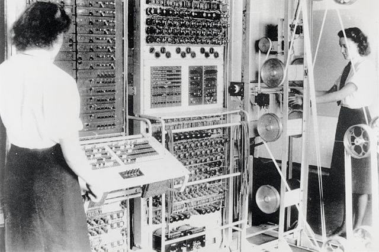
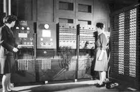
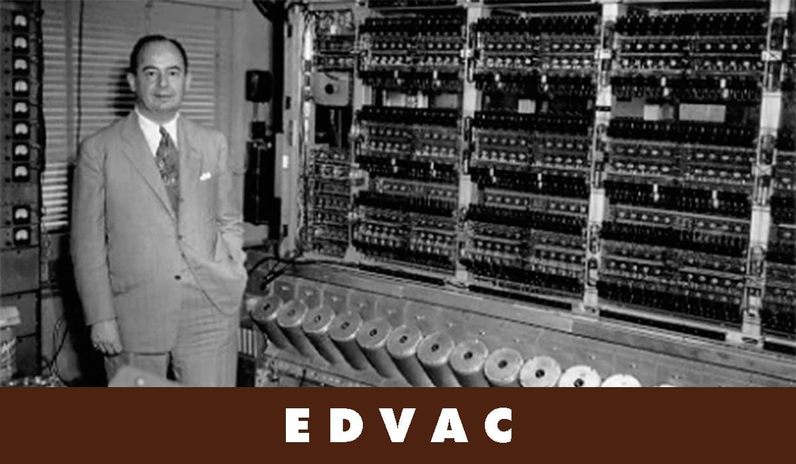

(1940 - 1955)
Valvulas de vacio.
- Tarjetas perforadas para almacenar datos.
- Maquinas de calculo automático.
- Programación en lenguaje de maquinas(BINARIO).
- Uso por parte de gobiernos universidades, científicos y militar.
Desarrollada en E.E.U.U
MARK I
Construido por Howard Aiken junto a IBM era electromecánica, tenía 760.000 ruedas, 800km de cable, pesaba 5Tn (Toneladas), se baso el la maquina analitica de Bbbage, se programaba con interruptores, lectora de cinta perforada para los programas, obtenia resultados impresos en maquinas de escribir electicas o perforadora de tarjetas.

Desarrollada en Inglaterra
Colosus
ENIAC
Primera computadora electronicao de propósito general, Desarrollada en la Universidad de Pensilvania, costo US$ 500.000, peso 2Tn. Fue construidad con 18000 valvaulas de vacio, consumia mucha energía electrica y despedia mucho calor. ocupaba una superficie de 90m2 llego a hacer 5000 sumas por segundo.
EDVAC
Segunda computadora programable dirigida por Jhon Von Neumann. posia el primer programa.
